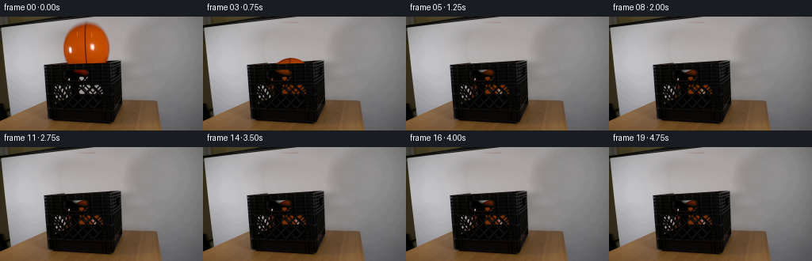
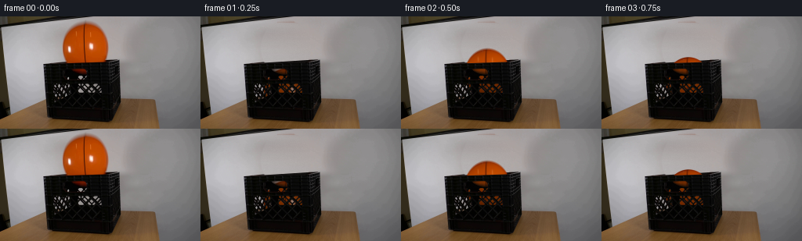

CODING AGENTS AS PIXEL WORLD MODELS
traex/GPT-6-Astra · 0015
点击播放 · 原生 RGB 像素
逐轮保存的候选
回放视频、检查图与代码变化。
每份候选均可单独播放。实际图片检查记录在下方工具轨迹中。
候选 01播放与检查图
点击播放 · 原生 RGB 像素


展开代码变化
--- 上一保存版本
+++ 本次保存版本
@@ -0,0 +1,223 @@
+from pathlib import Path
+import numpy as np
+from PIL import Image
+from scipy.ndimage import gaussian_filter, map_coordinates
+import cv2
+import artifact_io
+
+ROOT = Path(__file__).resolve().parent
+H, W = 144, 256
+I = np.asarray(Image.open(ROOT / 'first_frame.png').convert('RGB'), dtype=np.float64)
+yy, xx = np.mgrid[:H, :W].astype(float)
+CX, CY, RX, RY = 108.6136, 39.7878, 29.0522, 32.4649
+SKEW = -.00721
+u = (xx - CX - SKEW * (yy-CY)) / RX
+v = (yy-CY) / RY
+rad = np.sqrt(u*u+v*v)
+sdf = (1-rad)*30.5
+rng = np.random.default_rng(153)
+
+# Reconstruct the plain wall from the visible wall on either side of the ball.
+# Its horizontal lighting gradient and vertical illumination are retained.
+wall = I.copy()
+for y in range(4, 65):
+ if abs((y-CY)/RY) < 1.08:
+ half = RX*np.sqrt(max(0, 1-((y-CY)/RY)**2))
+ left = int(np.floor(CX-half-7))
+ right = int(np.ceil(CX+half+7))
+ else:
+ left, right = 96, 127
+ left=max(66,left); right=min(149,right)
+ # Avoid the crate rim when estimating wall illumination at its foot.
+ sy=min(y,51)
+ a=I[max(5,sy-1):sy+2,left-3:left+1].mean((0,1))
+ b=I[max(5,sy-1):sy+2,right:right+4].mean((0,1))
+ if y>51:
+ a += (y-51)*np.array([.11,.13,.12])
+ b += (y-51)*np.array([.10,.11,.11])
+ for x in range(max(0,left-3),min(W,right+4)):
+ w=np.clip((x-left)/(right-left),0,1)
+ wall[y,x]=a*(1-w)+b*w
+# Mild photographed wall grain rather than a flat, digitally filled region.
+noise=rng.normal(0,1.1,(H,W,1))
+noise=.7*noise+.3*gaussian_filter(noise,(.7,.7,0))
+wall += noise
+
+front = 62.47-.0335*xx
+back = 63.95-.0625*xx
+# The top back rail is fixed, behind the falling ball.
+rail_noise=gaussian_filter(rng.normal(0,2.3,(H,W)),(.3,.55))
+rail=np.empty_like(I)
+rail[:,:,0]=18+rail_noise
+rail[:,:,1]=16+rail_noise
+rail[:,:,2]=15+rail_noise
+ridge=10*np.exp(-((yy-back-.25)/.60)**2)
+rail += ridge[:,:,None]
+rail_cov=np.clip((yy-back+.4)/.9,0,1)
+replacement=wall*(1-rail_cov[:,:,None])+rail*rail_cov[:,:,None]
+remove=np.clip((sdf+4.2)/1.8,0,1)
+remove *= np.clip((61.7-yy)/.9,0,1)
+remove *= (yy>=4)
+clean=I*(1-remove[:,:,None])+replacement*remove[:,:,None]
+# Restore front rail's own surface. In the original, the last antialiased
+# orange row lies across this edge, so remove its color spill as well.
+front_region=(yy>front+1.0)&(yy<62)&(xx>81)&(xx<137)
+for c in range(3):
+ clean[:,:,c][front_region]=I[:,:,c][front_region]
+warm=(I[:,:,0]-I[:,:,1]>14)&(yy>front+.4)&(yy<62)&(xx>81)&(xx<137)
+clean[warm]=rail[warm]
+
+# Front lattice apertures: estimate subpixel openness using the background
+# light visible through them, preserving every original plastic strut.
+wall_lum=.299*wall[:,:,0]+.587*wall[:,:,1]+.114*wall[:,:,2]
+# Below the top edge, wall lighting can be measured directly beside the crate.
+backdrop=np.zeros_like(I)
+for y in range(H):
+ l=I[y,48:53].mean(0)
+ r=I[y,155:159].mean(0)
+ t=np.clip((np.arange(W)-50)/107,0,1)
+ backdrop[y]=l[None,:]*(1-t[:,None])+r[None,:]*t[:,None]
+L=.299*I[:,:,0]+.587*I[:,:,1]+.114*I[:,:,2]
+BL=.299*backdrop[:,:,0]+.587*backdrop[:,:,1]+.114*backdrop[:,:,2]
+openings=np.clip((L-13)/(BL-13+1e-6),0,1)
+openings *= (yy>=75)&(yy<=112)&(xx>=66)&(xx<=137)
+# Suppress highlights on the plastic, not its weave openings.
+openings *= np.clip((L-26)/14,0,1)
+# The small upper aperture initially looks orange because it already reveals
+# the bottom of the suspended ball. Recover the opening and empty it.
+handle=(yy>=66)&(yy<=74)&(xx>=89)&(xx<=113)
+handle_alpha=np.clip((I[:,:,0]-I[:,:,1]-3)/95,0,1)*handle
+handle_alpha=handle_alpha**.83
+openings=np.maximum(openings,handle_alpha)
+handle_bg=np.array([8.,8.,7.])[None,None,:]*(1-handle_alpha[:,:,None])+backdrop*handle_alpha[:,:,None]
+clean=np.where((handle_alpha>0)[:,:,None],handle_bg,clean)
+
+# Reuse the actual ball surface (including seams, highlights and fine texture).
+# Unmatte the edge so no gray wall fringe travels with the object.
+ball=np.zeros_like(I)
+a_geom=np.clip((sdf+.65)/1.3,0,1)
+a_color=np.clip((wall[:,:,2]-I[:,:,2])/(wall[:,:,2]-1+1e-6),0,1)
+a=np.where(sdf>2.5,1,a_color)
+a=np.where(sdf < -3.5,0,a)
+base_shade=np.sqrt(np.clip(1-u*u-v*v,0,1))
+base=np.stack([120+70*base_shade+6*u,36+37*base_shade+3*u,np.ones_like(u)],axis=2)
+unmat=(I-wall*(1-a[:,:,None]))/np.maximum(a[:,:,None],.13)
+unmat=np.clip(unmat,0,255)
+w=np.clip((a-.13)/.24,0,1)
+upper=unmat*w[:,:,None]+base*(1-w[:,:,None])
+upper=np.where((sdf>2.5)[:,:,None],I,upper)
+# Complete just the unseen lower hemisphere from the corresponding upper
+# latitude; its darker shading matches the view through the upper aperture.
+sy=2*CY-yy
+sx=xx-2*SKEW*(yy-CY)
+mirrored=np.stack([map_coordinates(upper[:,:,c],[sy,sx],order=1,mode='nearest') for c in range(3)],2)
+shade=np.clip(.92-.013*(yy-58),.65,1)
+mirrored=mirrored*shade[:,:,None]
+blend=np.clip((yy-54.5)/3.0,0,1)
+ball=upper*(1-blend[:,:,None])+mirrored*blend[:,:,None]
+ball=np.clip(ball,0,255)
+# Sprite edge texture is extended radially into the guard band for filtering.
+edge_u=u/np.maximum(rad,1e-8)*.965
+edge_v=v/np.maximum(rad,1e-8)*.965
+edge_y=CY+RY*edge_v
+edge_x=CX+RX*edge_u+SKEW*(edge_y-CY)
+extended=np.stack([map_coordinates(ball[:,:,c],[edge_y,edge_x],order=1,mode='nearest') for c in range(3)],2)
+ball=np.where((rad>.99)[:,:,None],extended,ball)
+
+# Analytic free fall and damped rebounds against the inside bottom of the
+# crate. Time is in seconds and pixel acceleration is calibrated to the setup.
+G=1800.0
+FLOOR_CENTER=98.0
+E=.70
+impact0=np.sqrt(2*(FLOOR_CENTER-CY)/G)
+impact_v=G*impact0
+impacts=[impact0]
+vels=[impact_v]
+for _ in range(16):
+ nv=vels[-1]*E
+ impacts.append(impacts[-1]+2*nv/G)
+ vels.append(nv)
+
+
+def trajectory(t):
+ if t<impact0:
+ y=CY+.5*G*t*t
+ vel=G*t
+ else:
+ j=np.searchsorted(impacts,t,side='right')-1
+ if j>=len(impacts)-1 or vels[j]*E<8:
+ y=FLOOR_CENTER; vel=0
+ else:
+ dt=t-impacts[j]
+ vu=vels[j]*E
+ y=FLOOR_CENTER-vu*dt+.5*G*dt*dt
+ vel=-vu+G*dt
+ # An inflatable ball's impact compression lasts a few hundredths of a sec.
+ squash=0
+ for it,vv in zip(impacts,vels):
+ squash=max(squash,.035*(vv/impact_v)*np.exp(-((t-it)/.011)**2))
+ y+=RY*squash
+ # Small lateral drift, damped after contact, remains inside the crate.
+ x=CX+2.5*(1-np.exp(-t/0.65))+.55*np.exp(-1.4*t)*np.sin(9*t)
+ angle=.07*(1-np.exp(-t/.5))
+ return x,y,squash,angle,vel
+
+# Supersample for smooth translated silhouettes and fine lattice occlusion.
+S=3
+hy,hx=np.mgrid[:H*S,:W*S].astype(np.float64)
+hx=(hx+.5)/S-.5
+hy=(hy+.5)/S-.5
+front_vis=np.clip((front-yy+.5)/1.0,0,1)
+
+def render(t):
+ cx,cy,squash,angle,vel=trajectory(t)
+ rx=RX*(1+squash*.5)
+ ry=RY*(1-squash)
+ U=(hx-cx-SKEW*(hy-cy))/rx
+ V=(hy-cy)/ry
+ r2=U*U+V*V
+ alpha=np.clip((1-np.sqrt(r2))*30.5*S+.5,0,1)
+ Z=np.sqrt(np.maximum(0,1-r2))
+ # Very slight physical spin, instead of a flat rotating disk.
+ sv=V*np.cos(angle)+Z*np.sin(angle)
+ su=U
+ map_y=CY+RY*sv
+ map_x=CX+RX*su+SKEW*(map_y-CY)
+ rgb=np.stack([map_coordinates(ball[:,:,c],[map_y,map_x],order=1,mode='nearest') for c in range(3)],2)
+ # Fixed illumination: compensate gently for texture latitude movement.
+ zold=np.sqrt(np.maximum(0,1-su*su-sv*sv))
+ light=(.60+.40*Z)/np.maximum(.60+.40*zold,.3)
+ rgb*=light[:,:,None]
+ # Average premultiplied color so edges never acquire black fringes.
+ low_a=alpha.reshape(H,S,W,S).mean((1,3))
+ low_p=(rgb*alpha[:,:,None]).reshape(H,S,W,S,3).mean((1,3))
+ low_rgb=low_p/np.maximum(low_a[:,:,None],1e-5)
+ over=low_a*front_vis
+ out=clean*(1-over[:,:,None])+low_rgb*over[:,:,None]
+ # The ball is shaded inside, and always stays behind the existing mesh.
+ shade=np.clip(.73-.0032*np.maximum(yy-61,0),.53,.73)
+ aperture=low_a*openings*(1-front_vis)
+ out+=aperture[:,:,None]*(low_rgb*shade[:,:,None]-backdrop)
+ return np.clip(out,0,255)
+
+
+def main():
+ frames=[I.astype(np.uint8)]
+ for k in range(1,20):
+ t=k/4
+ # Short, fixed shutter exposure; never use interpolated slow motion.
+ shots=[render(max(0,t+dt)) for dt in (-1/120,0,1/120)]
+ frame=np.rint(np.mean(shots,axis=0)).clip(0,255).astype(np.uint8)
+ frames.append(frame)
+ frames=np.stack(frames)
+ (ROOT/'.tmp').mkdir(exist_ok=True)
+ Image.fromarray(np.uint8(np.clip(clean,0,255))).save(ROOT/'.tmp'/'clean_plate.png')
+ Image.fromarray(np.uint8(np.clip(ball,0,255))).save(ROOT/'.tmp'/'ball_surface.png')
+ np.save(ROOT/'.tmp'/'trajectories.npy', np.array([trajectory(i/4) for i in range(20)]))
+ artifact_io.save(frames,ROOT)
+ assert np.array_equal(frames[0],np.asarray(Image.open(ROOT/'first_frame.png').convert('RGB')))
+ print('Saved:',frames.shape,frames.dtype)
+ print('ball center y:',[round(trajectory(i/4)[1],2) for i in range(20)])
+
+if __name__=='__main__':
+ main()
候选 02播放与检查图
点击播放 · 原生 RGB 像素
展开代码变化
--- 上一保存版本
+++ 本次保存版本
@@ -2,7 +2,6 @@
import numpy as np
from PIL import Image
from scipy.ndimage import gaussian_filter, map_coordinates
-import cv2
import artifact_io
ROOT = Path(__file__).resolve().parent
@@ -27,6 +26,8 @@
right = int(np.ceil(CX+half+7))
else:
left, right = 96, 127
+ if y <= 12:
+ left, right = 90, 133
left=max(66,left); right=min(149,right)
# Avoid the crate rim when estimating wall illumination at its foot.
sy=min(y,51)
@@ -44,7 +45,7 @@
wall += noise
front = 62.47-.0335*xx
-back = 63.95-.0625*xx
+back = 62.6-.050*xx
# The top back rail is fixed, behind the falling ball.
rail_noise=gaussian_filter(rng.normal(0,2.3,(H,W)),(.3,.55))
rail=np.empty_like(I)
可观测工具轨迹
实际执行的命令与返回图片。
命令 1exit 0
/bin/bash -lc "ls -la && cat prompt.txt && printf '\\n--- RULES ---\\n' && cat GENERATION_RULES.md"
命令 2exit 0
/bin/bash -lc "cat artifact_io.py && python - <<'PY'
from PIL import Image
import numpy as np
im=np.array(Image.open('first_frame.png'))
print('image',im.shape)
# numeric image map classifies colors, no visual image tools
im=np.array(Image.fromarray(im).resize((64,36)))
for row in im:
print(''.join('O' if r>g*1.4 and r>b*1.8 and r>90 else 'H' if r>g*1.2 and g>b*1.2 and r>80 else 'K' if max(r,g,b)<50 else 'd' if max(r,g,b)<100 else 's' if r>g*1.08 and r>b*1.15 else 'W' if min(r,g,b)>190 else '.' for r,g,b in row.astype(float)))
PY"命令 3exit 0
/bin/bash -lc "python - <<'PY'
from PIL import Image
import numpy as np
from scipy import ndimage
im=np.array(Image.open('first_frame.png')).astype(float)
r,g,b=im.transpose(2,0,1)
m=(r>1.35*g)&(r>1.8*b)&(r>80)
l,n=ndimage.label(m)
for i in range(1,n+1):
ys,xs=np.where(l==i)
if len(xs)>10:print(len(xs), (xs.min(),ys.min(),xs.max(),ys.max()), 'centroid', xs.mean(),ys.mean())
for y in range(0,80,2):
print('%3d'%y,''.join('O' if r[y,x]>g[y,x]*1.35 and r[y,x]>b[y,x]*1.8 and r[y,x]>80 else 'h' if r[y,x]>g[y,x]*1.17 and g[y,x]>b[y,x]*1.1 and r[y,x]>60 else 'K' if max(im[y,x])<35 else 'k' if max(im[y,x])<65 else 'd' if max(im[y,x])<100 else 'W' if min(im[y,x])>190 else '.' for x in range(48,160)))
print('RGB rows every 8 px')
for y in (0,8,12,24,40,52,56,60,64,68,72,80,96,112,128,140):
print(y,[im[y,x].astype(int).tolist() for x in range(64,161,8)])
PY"命令 4exit 0
/bin/bash -lc "python - <<'PY'
from PIL import Image
import numpy as np
im=np.asarray(Image.open('first_frame.png')).astype(float)
print('crate luminance, x50-155 every pixel, y52-140 every 2')
for y in range(52,142,2):
print('%3d '%y+''.join('O' if r>1.4*g and r>2*b and r>65 else ' ' if max(r,g,b)<12 else '.' if max(r,g,b)<25 else ':' if max(r,g,b)<40 else '-' if max(r,g,b)<65 else '=' if max(r,g,b)<90 else '+' if max(r,g,b)<120 else '*' if max(r,g,b)<150 else '#' if max(r,g,b)<180 else '@' for r,g,b in im[y,50:156]))
# get edge endpoints y<60 threshold ball vs outside
for y in range(5,61):
r,g,b=im[y].T
xs=np.flatnonzero((r>g*1.28)&(r>b*1.5)&(r>100)&(np.arange(256)>65)&(np.arange(256)<147))
if len(xs): print(y, xs.min(),xs.max())
PY"命令 5exit 0
/bin/bash -lc "python - <<'PY'
import importlib.util
for p in ['cv2','scipy']:
print(p,importlib.util.find_spec(p))
from PIL import Image
import numpy as np
im=np.asarray(Image.open('first_frame.png')).astype(float)
print('Wall profiles')
for y in [6,10,20,30,40,50,54,56,58,60]:
print(y,[(x,list(im[y-1:y+2,x-1:x+2].mean((0,1)).round(1))) for x in [68,72,76,80,84,92,108,128,136,140,144,148,152,156]])
PY"命令 6exit 0
/bin/bash -lc "python - <<'PY'
import numpy as np
from PIL import Image
from scipy.optimize import least_squares
im=np.asarray(Image.open('first_frame.png')).astype(float); r,g,b=im.transpose(2,0,1)
points=[]
for y in range(8,58):
xs=np.flatnonzero((r[y]>g[y]*1.28)&(r[y]>b[y]*1.5)&(r[y]>100)&(np.arange(256)>65)&(np.arange(256)<147))
if len(xs):points.extend([(xs.min()-.3,y),(xs.max()+.3,y)])
p=np.array(points)
def fun(v):
cx,cy,rx,ry,sk=v
return ((p[:,0]-cx-sk*(p[:,1]-cy))/rx)**2+((p[:,1]-cy)/ry)**2-1
v=least_squares(fun,[109,40,29,32,0]).x
print(v, np.sqrt(np.mean(fun(v)**2)))
PY"命令 7exit 0
/bin/bash -lc "python - <<'PY'
from PIL import Image
import numpy as np
im=np.array(Image.open('first_frame.png')).astype(float)
for x in range(82,139,2):
print(x,[(y,im[y,x].astype(int).tolist()) for y in range(55,62)])
print('holes grayscale y66-110')
for y in range(66,112):
print('%3d '%y+''.join('O' if r>g*1.5 and r>55 else 'H' if max(r,g,b)>110 else 'h' if max(r,g,b)>70 else '+' if max(r,g,b)>40 else '.' if max(r,g,b)>20 else ' ' for r,g,b in im[y,64:142]))
PY"命令 8exit 0
/bin/bash -lc "python - <<'PY'
from PIL import Image
import numpy as np
im=np.asarray(Image.open('first_frame.png')).astype(float);r,g,b=im.transpose(2,0,1)
for y in range(65,76):
m=(r[y]-g[y]>10)&(r[y]>25);xs=np.flatnonzero(m&(np.arange(256)>84)&(np.arange(256)<118)); print(y, xs.tolist())
PY"命令 9exit 0
/bin/bash -lc "cat > generate.py <<'PY'
from pathlib import Path
import numpy as np
from PIL import Image
from scipy.ndimage import gaussian_filter, map_coordinates
import cv2
import artifact_io
ROOT = Path(__file__).resolve().parent
H, W = 144, 256
I = np.asarray(Image.open(ROOT / 'first_frame.png').convert('RGB'), dtype=np.float64)
yy, xx = np.mgrid[:H, :W].astype(float)
CX, CY, RX, RY = 108.6136, 39.7878, 29.0522, 32.4649
SKEW = -.00721
u = (xx - CX - SKEW * (yy-CY)) / RX
v = (yy-CY) / RY
rad = np.sqrt(u*u+v*v)
sdf = (1-rad)*30.5
rng = np.random.default_rng(153)
# Reconstruct the plain wall from the visible wall on either side of the ball.
# Its horizontal lighting gradient and vertical illumination are retained.
wall = I.copy()
for y in range(4, 65):
if abs((y-CY)/RY) < 1.08:
half = RX*np.sqrt(max(0, 1-((y-CY)/RY)**2))
left = int(np.floor(CX-half-7))
right = int(np.ceil(CX+half+7))
else:
left, right = 96, 127
left=max(66,left); right=min(149,right)
# Avoid the crate rim when estimating wall illumination at its foot.
sy=min(y,51)
a=I[max(5,sy-1):sy+2,left-3:left+1].mean((0,1))
b=I[max(5,sy-1):sy+2,right:right+4].mean((0,1))
if y>51:
a += (y-51)*np.array([.11,.13,.12])
b += (y-51)*np.array([.10,.11,.11])
for x in range(max(0,left-3),min(W,right+4)):
w=np.clip((x-left)/(right-left),0,1)
wall[y,x]=a*(1-w)+b*w
# Mild photographed wall grain rather than a flat, digitally filled region.
noise=rng.normal(0,1.1,(H,W,1))
noise=.7*noise+.3*gaussian_filter(noise,(.7,.7,0))
wall += noise
front = 62.47-.0335*xx
back = 63.95-.0625*xx
# The top back rail is fixed, behind the falling ball.
rail_noise=gaussian_filter(rng.normal(0,2.3,(H,W)),(.3,.55))
rail=np.empty_like(I)
rail[:,:,0]=18+rail_noise
rail[:,:,1]=16+rail_noise
rail[:,:,2]=15+rail_noise
ridge=10*np.exp(-((yy-back-.25)/.60)**2)
rail += ridge[:,:,None]
rail_cov=np.clip((yy-back+.4)/.9,0,1)
replacement=wall*(1-rail_cov[:,:,None])+rail*rail_cov[:,:,None]
remove=np.clip((sdf+4.2)/1.8,0,1)
remove *= np.clip((61.7-yy)/.9,0,1)
remove *= (yy>=4)
clean=I*(1-remove[:,:,None])+replacement*remove[:,:,None]
# Restore front rail's own surface. In the original, the last antialiased
# orange row lies across this edge, so remove its color spill as well.
front_region=(yy>front+1.0)&(yy<62)&(xx>81)&(xx<137)
for c in range(3):
clean[:,:,c][front_region]=I[:,:,c][front_region]
warm=(I[:,:,0]-I[:,:,1]>14)&(yy>front+.4)&(yy<62)&(xx>81)&(xx<137)
clean[warm]=rail[warm]
# Front lattice apertures: estimate subpixel openness using the background
# light visible through them, preserving every original plastic strut.
wall_lum=.299*wall[:,:,0]+.587*wall[:,:,1]+.114*wall[:,:,2]
# Below the top edge, wall lighting can be measured directly beside the crate.
backdrop=np.zeros_like(I)
for y in range(H):
l=I[y,48:53].mean(0)
r=I[y,155:159].mean(0)
t=np.clip((np.arange(W)-50)/107,0,1)
backdrop[y]=l[None,:]*(1-t[:,None])+r[None,:]*t[:,None]
L=.299*I[:,:,0]+.587*I[:,:,1]+.114*I[:,:,2]
BL=.299*backdrop[:,:,0]+.587*backdrop[:,:,1]+.114*backdrop[:,:,2]
openings=np.clip((L-13)/(BL-13+1e-6),0,1)
openings *= (yy>=75)&(yy<=112)&(xx>=66)&(xx<=137)
# Suppress highlights on the plastic, not its weave openings.
openings *= np.clip((L-26)/14,0,1)
# The small upper aperture initially looks orange because it already reveals
# the bottom of the suspended ball. Recover the opening and empty it.
handle=(yy>=66)&(yy<=74)&(xx>=89)&(xx<=113)
handle_alpha=np.clip((I[:,:,0]-I[:,:,1]-3)/95,0,1)*handle
handle_alpha=handle_alpha**.83
openings=np.maximum(openings,handle_alpha)
handle_bg=np.array([8.,8.,7.])[None,None,:]*(1-handle_alpha[:,:,None])+backdrop*handle_alpha[:,:,None]
clean=np.where((handle_alpha>0)[:,:,None],handle_bg,clean)
# Reuse the actual ball surface (including seams, highlights and fine texture).
# Unmatte the edge so no gray wall fringe travels with the object.
ball=np.zeros_like(I)
a_geom=np.clip((sdf+.65)/1.3,0,1)
a_color=np.clip((wall[:,:,2]-I[:,:,2])/(wall[:,:,2]-1+1e-6),0,1)
a=np.where(sdf>2.5,1,a_color)
a=np.where(sdf < -3.5,0,a)
base_shade=np.sqrt(np.clip(1-u*u-v*v,0,1))
base=np.stack([120+70*base_shade+6*u,36+37*base_shade+3*u,np.ones_like(u)],axis=2)
unmat=(I-wall*(1-a[:,:,None]))/np.maximum(a[:,:,None],.13)
unmat=np.clip(unmat,0,255)
w=np.clip((a-.13)/.24,0,1)
upper=unmat*w[:,:,None]+base*(1-w[:,:,None])
upper=np.where((sdf>2.5)[:,:,None],I,upper)
# Complete just the unseen lower hemisphere from the corresponding upper
# latitude; its darker shading matches the view through the upper aperture.
sy=2*CY-yy
sx=xx-2*SKEW*(yy-CY)
mirrored=np.stack([map_coordinates(upper[:,:,c],[sy,sx],order=1,mode='nearest') for c in range(3)],2)
shade=np.clip(.92-.013*(yy-58),.65,1)
mirrored=mirrored*shade[:,:,None]
blend=np.clip((yy-54.5)/3.0,0,1)
ball=upper*(1-blend[:,:,None])+mirrored*blend[:,:,None]
ball=np.clip(ball,0,255)
# Sprite edge texture is extended radially into the guard band for filtering.
edge_u=u/np.maximum(rad,1e-8)*.965
edge_v=v/np.maximum(rad,1e-8)*.965
edge_y=CY+RY*edge_v
edge_x=CX+RX*edge_u+SKEW*(edge_y-CY)
extended=np.stack([map_coordinates(ball[:,:,c],[edge_y,edge_x],order=1,mode='nearest') for c in range(3)],2)
ball=np.where((rad>.99)[:,:,None],extended,ball)
# Analytic free fall and damped rebounds against the inside bottom of the
# crate. Time is in seconds and pixel acceleration is calibrated to the setup.
G=1800.0
FLOOR_CENTER=98.0
E=.70
impact0=np.sqrt(2*(FLOOR_CENTER-CY)/G)
impact_v=G*impact0
impacts=[impact0]
vels=[impact_v]
for _ in range(16):
nv=vels[-1]*E
impacts.append(impacts[-1]+2*nv/G)
vels.append(nv)
def trajectory(t):
if t<impact0:
y=CY+.5*G*t*t
vel=G*t
else:
j=np.searchsorted(impacts,t,side='right')-1
if j>=len(impacts)-1 or vels[j]*E<8:
y=FLOOR_CENTER; vel=0
else:
dt=t-impacts[j]
vu=vels[j]*E
y=FLOOR_CENTER-vu*dt+.5*G*dt*dt
vel=-vu+G*dt
# An inflatable ball's impact compression lasts a few hundredths of a sec.
squash=0
for it,vv in zip(impacts,vels):
squash=max(squash,.035*(vv/impact_v)*np.exp(-((t-it)/.011)**2))
y+=RY*squash
# Small lateral drift, damped after contact, remains inside the crate.
x=CX+2.5*(1-np.exp(-t/0.65))+.55*np.exp(-1.4*t)*np.sin(9*t)
angle=.07*(1-np.exp(-t/.5))
return x,y,squash,angle,vel
# Supersample for smooth translated silhouettes and fine lattice occlusion.
S=3
hy,hx=np.mgrid[:H*S,:W*S].astype(np.float64)
hx=(hx+.5)/S-.5
hy=(hy+.5)/S-.5
front_vis=np.clip((front-yy+.5)/1.0,0,1)
def render(t):
cx,cy,squash,angle,vel=trajectory(t)
rx=RX*(1+squash*.5)
ry=RY*(1-squash)
U=(hx-cx-SKEW*(hy-cy))/rx
V=(hy-cy)/ry
r2=U*U+V*V
alpha=np.clip((1-np.sqrt(r2))*30.5*S+.5,0,1)
Z=np.sqrt(np.maximum(0,1-r2))
# Very slight physical spin, instead of a flat rotating disk.
sv=V*np.cos(angle)+Z*np.sin(angle)
su=U
map_y=CY+RY*sv
map_x=CX+RX*su+SKEW*(map_y-CY)
rgb=np.stack([map_coordinates(ball[:,:,c],[map_y,map_x],order=1,mode='nearest') for c in range(3)],2)
# Fixed illumination: compensate gently for texture latitude movement.
zold=np.sqrt(np.maximum(0,1-su*su-sv*sv))
light=(.60+.40*Z)/np.maximum(.60+.40*zold,.3)
rgb*=light[:,:,None]
# Average premultiplied color so edges never acquire black fringes.
low_a=alpha.reshape(H,S,W,S).mean((1,3))
low_p=(rgb*alpha[:,:,None]).reshape(H,S,W,S,3).mean((1,3))
low_rgb=low_p/np.maximum(low_a[:,:,None],1e-5)
over=low_a*front_vis
out=clean*(1-over[:,:,None])+low_rgb*over[:,:,None]
# The ball is shaded inside, and always stays behind the existing mesh.
shade=np.clip(.73-.0032*np.maximum(yy-61,0),.53,.73)
aperture=low_a*openings*(1-front_vis)
out+=aperture[:,:,None]*(low_rgb*shade[:,:,None]-backdrop)
return np.clip(out,0,255)
def main():
frames=[I.astype(np.uint8)]
for k in range(1,20):
t=k/4
# Short, fixed shutter exposure; never use interpolated slow motion.
shots=[render(max(0,t+dt)) for dt in (-1/120,0,1/120)]
frame=np.rint(np.mean(shots,axis=0)).clip(0,255).astype(np.uint8)
frames.append(frame)
frames=np.stack(frames)
(ROOT/'.tmp').mkdir(exist_ok=True)
Image.fromarray(np.uint8(np.clip(clean,0,255))).save(ROOT/'.tmp'/'clean_plate.png')
Image.fromarray(np.uint8(np.clip(ball,0,255))).save(ROOT/'.tmp'/'ball_surface.png')
np.save(ROOT/'.tmp'/'trajectories.npy', np.array([trajectory(i/4) for i in range(20)]))
artifact_io.save(frames,ROOT)
assert np.array_equal(frames[0],np.asarray(Image.open(ROOT/'first_frame.png').convert('RGB')))
print('Saved:',frames.shape,frames.dtype)
print('ball center y:',[round(trajectory(i/4)[1],2) for i in range(20)])
if __name__=='__main__':
main()
PY
python generate.py"命令 10exit 0
/bin/bash -lc "python - <<'PY'
from PIL import Image
import numpy as np
A=np.array(Image.open('first_frame.png')).astype(float)
for k in [1,2,3,6,19]:
im=np.asarray(Image.open('frames/%02d.png'%k)).astype(float)
r,g,b=im.transpose(2,0,1)
orange=(r>1.5*g)&(r>1.8*b)&(r>60)
upper=orange[:112].copy()
upper[:,:65]=False;upper[:,140:]=False
ys,xs=np.where(upper)
print('frame',k,'orange',len(xs),'bounds',(xs.min(),ys.min(),xs.max(),ys.max()),'mean', im[7:55,83:137].mean((0,1)))
for y in range(4,113,3):
print('%3d'%y,''.join('O' if r>1.5*g and r>1.8*b and r>60 else ' ' if max(r,g,b)<20 else '.' if max(r,g,b)<50 else ':' if max(r,g,b)<100 else '+' if max(r,g,b)<145 else '#' if max(r,g,b)<190 else '@' for r,g,b in im[y,65:149:2]))
print('Background boundary profiles at top, left/right ball former outline')
im=np.asarray(Image.open('frames/19.png'))
for y in [4,5,6,7,8,9,10,20,30,40,50,54,56,58,59,60,61]:
print(y,[(x,im[y,x].tolist()) for x in [75,78,80,85,95,100,108,115,125,136,139,142]])
# Verify all remaining pixels elsewhere unchanged.
b=np.array(Image.open('frames/19.png')).astype(int)
d=np.any(b"'!=A,axis=2)
ys,xs=np.where(d)
print('"'change bounds',xs.min(),xs.max(),ys.min(),ys.max(),'changed',d.sum())
PY"命令 11exit 0
/bin/bash -lc "python - <<'PY'
from PIL import Image
import numpy as np
im=np.asarray(Image.open('first_frame.png'))
for x in list(range(54,87))+list(range(134,153)):
print(x,[(y,int(im[y,x].max())) for y in range(54,64)])
PY"命令 12exit 0
/bin/bash -lc "python - <<'PY'
p='generate.py'
s=open(p).read().replace('import cv2\\n','')
s=s.replace(' left=max(66,left); right=min(149,right)',' if y <= 12:\\n left, right = 90, 133\\n left=max(66,left); right=min(149,right)')
s=s.replace('back = 63.95-.0625*xx','back = 62.6-.050*xx')
open(p,'w').write(s)
PY
python generate.py
which ffmpeg || true
ls -lh pixels.npz index.html"保存候选 2 份；完成命令 12 次；可验证图片返回 0 张。原始 API 响应与完整日志保留在本地。